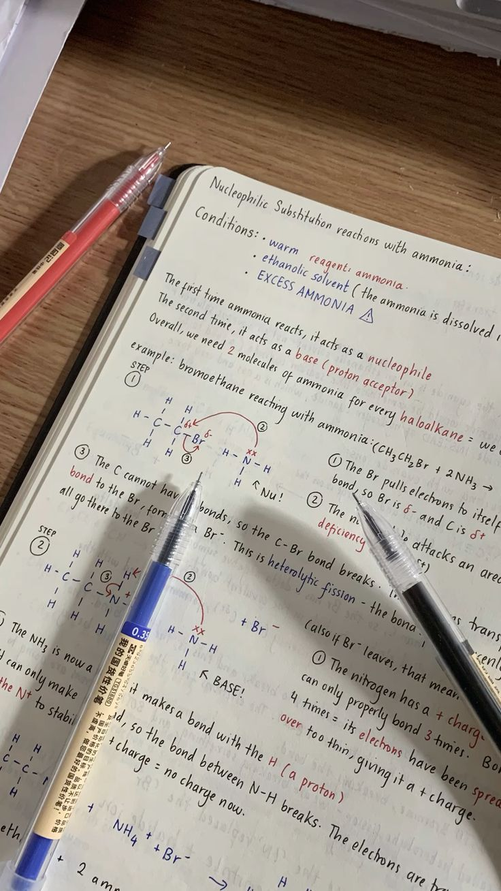
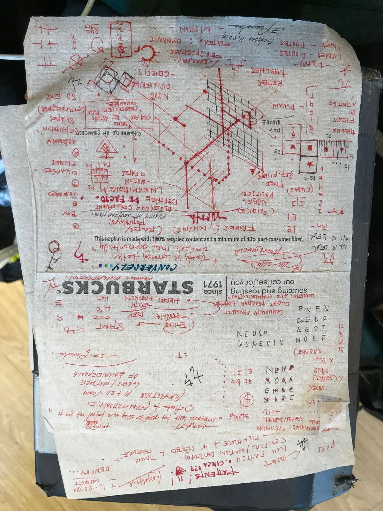

The photographic register
Chosen as the primary visual identity direction (rooted in Recipe B / Maker), the photographic register — when photography is present at all — is handwritten notes, study notebooks, planning sketches, drafting paper, the texture of work-in-progress. Not offices. Not teams. Not stock photography of "developers." Not Corporate Memphis illustration in photographic form.
The register
Photography is optional. Most surfaces should not include photography at all — the graph-paper grid, the terminal-dark code panels, and the chartreuse pulse do the visual work. Photography appears only when a section needs to communicate "this is a real working document" rather than "this is a polished product."
When photography does appear, it falls into three categories:
- Handwritten notes — pen on paper, smudges, marginalia, cross-outs. The texture of thinking, not the texture of polish.
- Study notebooks — open notebooks with sketches, lists, calculations. The texture of working through a problem.
- Planning sketches — wireframes, flowcharts, hand-drawn diagrams. The texture of design-in-progress, before it becomes code.
Examples that work
Three reference photographs from the brand identity corpus. Each demonstrates one of the three categories and is the kind of imagery DTPR may ship when a surface needs the texture of work-in-progress.
Open notebook, grid-ruled paper, hand-drawn graphs on finance theory. Top-down framing, natural daylight, no color grading.

Handwritten chemistry notes on a wooden surface. Pens resting on the page. Warm artificial light. Documentary register.

Napkin diagrams from a brainstorming session. Raw, complex, diagrammatic. Natural daylight. Spontaneous register.
Why these work
Each image passes four tests against the photographic register:
- No people as primary subjects. When hands appear (B-pho-003), they are cropped at the wrist — the work is the subject, not the worker. This preserves the "tool, not brochure" register.
- Analog texture. Paper grain, ink bleed, graphite, coffee-stained napkins. The texture of thinking, not the texture of polish.
- No artificial setup. Documentary or candid composition, not posed. The image looks like a working session, not a stock shoot.
- Original context, not stock. None of these read as "developers in a stylized office" or "team brainstorming in a conference room." They read as one person, one notebook, one napkin.
Examples to avoid
- Handwritten notes — pen on drafting paper, ink smudges, marginalia.
- Study notebooks — open pages with sketches and lists.
- Planning sketches — wireframes, flowcharts, before-code artifacts.
- Texture shots — close-ups of paper, ink, drafting tools.
- Stock photography of "developers" — people at laptops in stylized offices.
- Stock photography of "teams" — five diverse people around a conference table.
- Generic city photography — skylines, streets, anonymous urban scenes.
- Photographic Corporate Memphis — abstract shapes photographed as if real.
- Aerial drone photography of "smart cities" — the Sidewalk Toronto lineage.
Treatment rules
When photography appears:
- No color grading. Photographs ship as captured. No filters, no LUTs, no "moody" adjustments. The work-in-progress texture is the value.
- No overlays. No chartreuse tint, no duotone, no gradient overlay. The chartreuse reservation rule applies — chartreuse does not appear on decorative elements.
- Sharp edges. No soft drop shadows on photographs. If a photograph needs to sit on a surface, use a 1px border, not a shadow.
- Original only. Stock photographs are not part of the photographic register. If a section needs photography, source it from the corpus or commission it.